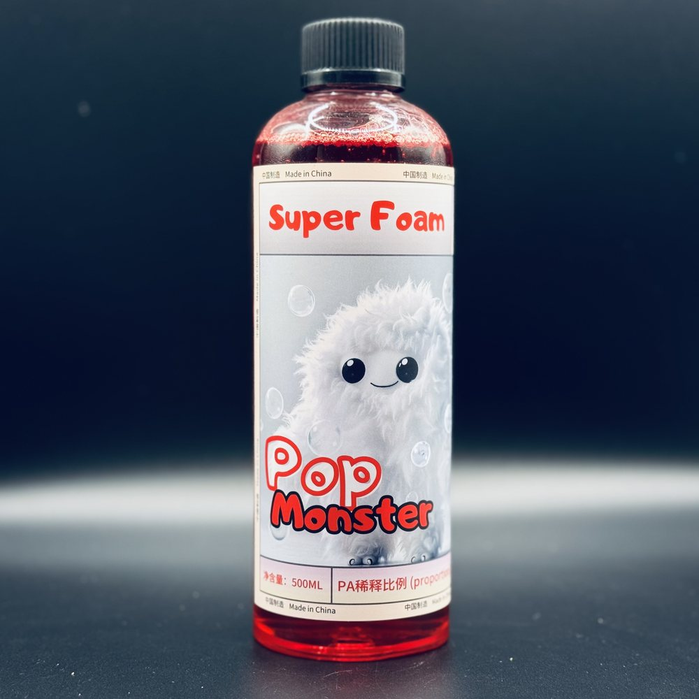

Super Foam Car Wash
A thick foam car wash for everyday contact washing. The foam wraps around dust and grit before you wipe. Also suitable for routine maintenance washes on coated cars.
Add to cart → fill in your details → send your order on WhatsApp; we confirm on WhatsApp whether each item can ship to your country and what shipping costs, then you pay
Product description
If your wash foam is too thin to cling and you end up with swirl marks all over the car after washing, the problem is usually that the foam isn't building a lubricating layer, so your wash mitt is basically grinding straight on the paint. Super Foam is a car wash for everyday contact washing: the thick foam builds a lubricating, suspending layer that lifts dust and fine grit off the surface first, to help avoid secondary damage to the paint while you wipe. It's also the wash to use before claying or before polishing.
Specs
- Dilution ratio
- Pressure washer PA foam lance: 1:20 to 1:50. Pump foam sprayer, electric foam sprayer, or foam bucket: 1:100 to 1:200. Tools that don't run through a pressure washer get no extra dilution, so their ratio is 10 times the PA lance's. This is where people most often get it wrong.
- Compatible surfaces
- For everyday contact washing on coated cars, and regular washing on uncoated cars with light to moderate dirt.
- Pads to pair with
- A pressure washer with a PA foam lance, or a pump foam sprayer, electric foam sprayer, or foam bucket. A microfiber wash mitt for wiping.
How to use it
- Pour into your foam gun or foam sprayer and set the concentration for your tool: 1:20 to 1:50 for a pressure washer PA lance, 1:100 to 1:200 for a pump or electric foam sprayer or foam bucket.
- Cover the whole car in foam.
- Let it sit for 5 minutes.
- Wipe gently with a microfiber wash mitt.
- Rinse clean with water (a pressure washer).
- We don't recommend spraying it as a mist. A mist won't build the foam's lubricating layer.
Things to know
- When diluting, add water first, then pour in the product, to avoid splashing.
- In hard water areas, you can dilute with distilled water instead.
- Wear gloves and eye protection. If working indoors, open a window and keep it ventilated.
- We don't recommend using it as a mist. Without the foam's lubricating layer, wiping can easily leave fine scratches in the paint.
- For uncertain materials, modified parts, or aged paint, test a small hidden area first.
- Avoid working in direct sun or when the car is hot to the touch, and don't let the foam dry on the paint.
- If it gets in eyes or on skin, rinse immediately with plenty of water and see a doctor if needed.
- Do not mix with other cleaning products.
- Store in a cool place, out of reach of children. Do not swallow.
FAQ
Pre-wash softens and rinses off most of the grit and dirt before your mitt ever touches the car. Pre-wash products are usually alkaline, so the paint still has a bit of residue after rinsing. The contact wash, with this product and a wash mitt, goes over the car again — it wipes off the thin layer of dirt the pre-wash didn't take, and it also carries away the alkaline residue the pre-wash left behind.
Yes. This product is made for everyday contact washing on coated cars, and it works fine for regular washing on uncoated cars with light to moderate dirt too.
Not a good idea. If the car just came off a drive or has been sitting in the sun and feels hot to the touch, the foam will dry on the paint fast. Park it in the shade first and wait until the body is back to normal temperature, no higher than about 40°C, before you start washing.
Application guide
Similar products


Super Foam Car Wash
If you're ready to buy, add it to your cart and send your order on WhatsApp. If you're not sure it's right for your car, ask us on WhatsApp first before you order.